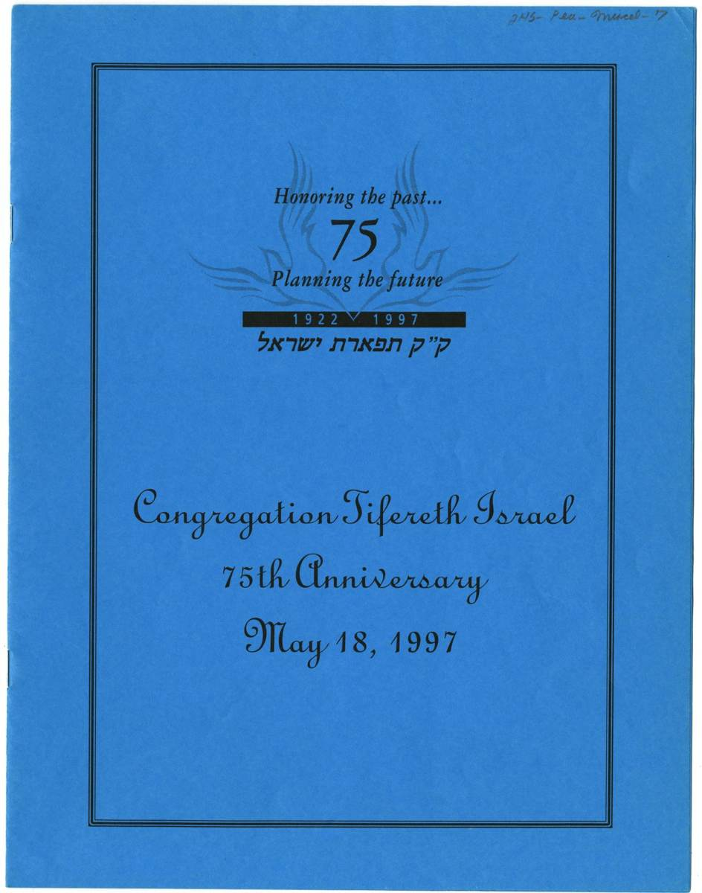
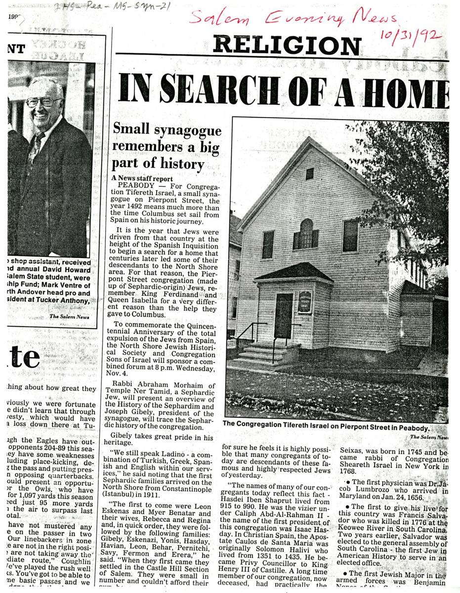

More than a century of Jewish life in Peabody
The story of Congregation Tifereth Israel begins with Sephardic families who created a Jewish home in Peabody and carried their traditions forward in a new country.
Roots in the Ottoman Jewish World
Congregation Tifereth Israel grew from a small Sephardic community that began taking root on the North Shore in the years before the First World War. Families from Ottoman Turkey, especially Constantinople, brought with them Ladino language, Sephardic prayer, and customs shaped by generations of Jewish life in the eastern Mediterranean. Their traditions traced back through Ottoman Sephardic communities to Jews expelled from Spain in 1492.
Some of the earliest families arrived in the Peabody and Salem area around 1911. The Balkan Wars, political instability, and compulsory military service helped push families to leave the Ottoman Empire, while Peabody's leather tanneries and other local industries offered work and the chance to build a new life.
Among the early pioneers remembered in the community are Don and Rebecca Eskenas and Meyer and Regina Bevotar. Their generation helped establish the foundation from which a distinct Sephardic congregation would grow.
February 15, 1922: A Congregation Is Founded
On February 15, 1922, seven Turkish Jewish immigrants formally chartered Congregation Tifereth Israel: Leon Eskenas, Nissim Eskenazi, Morris Gibely, Robert Hasday, Joseph Havian, David Leon, and Joseph Pernitchi.
The new congregation gave Peabody's Sephardic families a place to preserve a liturgy and communal culture that differed from the Yiddish-speaking Ashkenazi synagogues around them. Leon Eskenas served as president through the congregation's formative years, and Ralph Bencangey is remembered among its early spiritual leaders.

From Living Rooms to Pierpont Street
For decades, Tifereth Israel worshiped without a permanent building of its own. Families prayed in private homes and rented rooms, and at times used space in other local synagogues, including Congregation Sons of Israel and Anshe Sfard. Services were also held for a time across the city line in Salem.
The congregation once purchased land with hopes of constructing a synagogue, but that plan did not come to fruition. In 1955, CTI instead acquired the former Church of the Nazarene at 8 Pierpont Street in Peabody. That modest building became the congregation's enduring home.

Preserving Ladino and Sephardic Traditions
For generations, members of CTI spoke Ladino, the Judeo-Spanish language of many Sephardic Jews from the former Ottoman Empire. The congregation preserved Sephardic melodies, prayer structures, and customs brought from Turkey even as its membership gradually became more diverse.
Among CTI's distinctive practices is the custom that blood relatives of a person called for an aliyah stand together in respect. The community also maintains a separate Sephardic section in a cemetery in Danvers, where older gravestones preserve traces of the community's language and heritage.
Rabbi Dov Pikelny helped anchor the congregation's religious life for nearly two decades beginning in the early 1980s, serving as a volunteer rabbi. Barbara Pikelny served as cantor during much of that period, while Joanne Pressman became an important keeper and transmitter of CTI's Sephardic musical and liturgical traditions.
A Community That Continued to Change
Over time, the boundaries between Sephardic and Ashkenazi Jewish life on the North Shore softened. Ashkenazi families joined CTI, intercultural marriages became part of the community's story, and the congregation evolved while continuing to protect the customs that made it distinctive.
A 2019 profile described CTI as a community of roughly 80 members, with Sephardic and Ashkenazi members present in roughly equal numbers. That figure is best understood as a snapshot of the congregation at that time rather than a current membership count.
Lay leaders have played an essential role in that continuity. Among those remembered for long service are Joseph Gibely II and Elliot Hershoff, who became the congregation's first Ashkenazi president. Joanne Pressman has also served as historian, cantorial soloist, and a bridge between generations; she is the granddaughter of two of CTI's original founders.

A Century — and the Next Chapter
Congregation Tifereth Israel marked its 90th anniversary in 2012 and celebrated its centennial in 2022. More than a century after seven immigrants formally created the congregation, CTI remains at 8 Pierpont Street — still shaped by the determination to carry Sephardic Jewish memory, music, and community forward.

A living history
CTI’s history is carried not only in dates and documents, but in the people, worship, melodies, and gatherings that have kept the congregation alive across generations.
The wider community
CTI grew as part of a broader Jewish community in Peabody. This 1958 menorah-lighting photograph comes from the Peabody Hebrew School at 42 Washington Street and is included as regional context rather than as a CTI-specific image.

Documents and images from CTI's story
The Jewish Community of Peabody archival collection preserves photographs, programs, newspaper clippings, and research materials documenting generations of congregational life.

The congregation's early home
An archival image labeled "Congregation Tifereth Israel 1922," preserved in the Jewish Community of Peabody records.

75 years of community
Cover of a program marking Congregation Tifereth Israel's 75th anniversary in May 1997.

Community coverage
An archival newspaper clipping documenting CTI and its members.

In search of a home
A historical newspaper feature on the congregation and its building story.
Historical Timeline
Sephardic Jews Make Peabody Home
Sephardic Jewish immigrants—many from Constantinople and the Ladino-speaking communities of the Ottoman world—began building new lives in Peabody.
Congregation Tifereth Israel Is Born
A small group of Sephardic families established the congregation, gathering first in homes and later in rented quarters in the Boston Road area.
Before Pierpont Street
A surviving advertisement identifies the Church of the Nazarene at 8 Pierpont Street before the property became CTI's home.
A Permanent Home
CTI acquired 8 Pierpont Street after more than three decades without a building of its own.
A New Era of Religious Leadership
Rabbi Dov Pikelny began serving the congregation as volunteer rabbi, helping sustain CTI's religious life for nearly two decades.
Passing the Music Forward
Joanne Pressman became an important transmitter of CTI's Sephardic musical and liturgical tradition.
Celebrating 90 Years
Congregation Tifereth Israel marked nine decades of Jewish life in Peabody.
Sephardic Traditions Live On
A Jewish Journal feature highlighted CTI's continued commitment to its Sephardic heritage.
One Hundred Years
CTI celebrated its centennial, honoring generations of members who kept the community alive while allowing it to grow and change.
The Story Continues
CTI remains at 8 Pierpont Street. Its history is not simply something we preserve. It is something we continue.